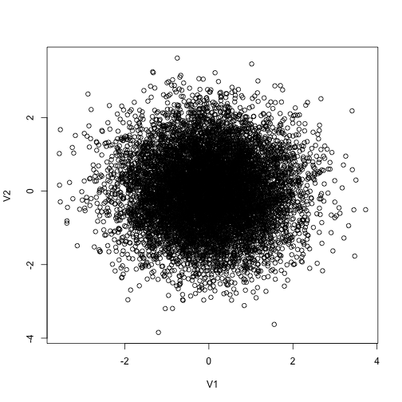
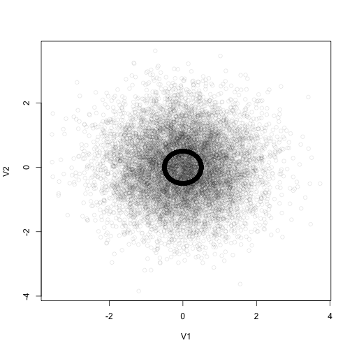
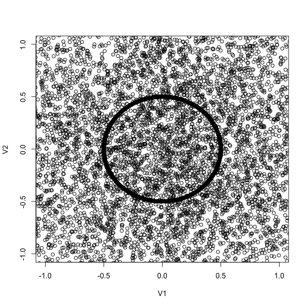
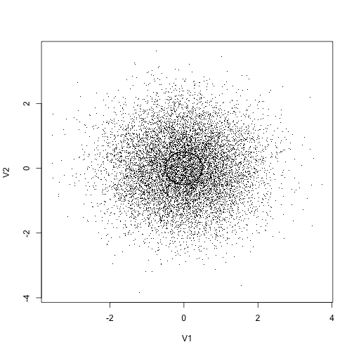
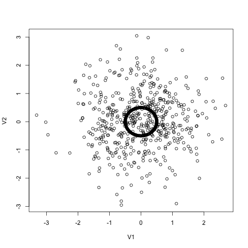
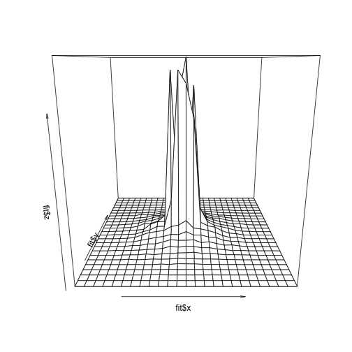

A reproducible gallery of statistical graphics
This article was borrowed from my blog post to show how to visualize a large amount of data in scatter plots. Here is how the original data was generated:
knitr::opts_chunk$set(tidy = F, fig.path = "assets/fig/")
knitr::opts_knit$set(base.url = "../")
# generate the data
set.seed(20111105)
x = rbind(matrix(rnorm(10000 * 2), ncol = 2), local({
r = runif(10000, 0, 2 * pi)
0.5 * cbind(sin(r), cos(r))
}))
x = as.data.frame(x[sample(nrow(x)), ])
It is not useful since you can see nothing.
plot(x)

We take alpha = 0.1 to generate semi-transparent colors.
plot(x, col = rgb(0, 0, 0, 0.1))

Zoom into the point cloud:
plot(x, xlim = c(-1, 1), ylim = c(-1, 1))

Use smaller points:
plot(x, pch = ".")

Only take a look at a random subset:
plot(x[sample(nrow(x), 1000), ])

We can use the color of hexagons to denote the number of points in them:
library(hexbin)
## Error: there is no package called 'hexbin'
with(x, plot(hexbin(V1, V2)))
## Error: could not find function "hexbin"
We can estimate the two-dimensional density surface using the kde2d() function in the MASS package:
library(MASS)
fit = kde2d(x[, 1], x[, 2])
# perspective plot by persp()
persp(fit$x, fit$y, fit$z)

That is only a static plot, and we can actually interact with the surface (e.g. rotating and zooming) if we draw it with the rgl package:
library(rgl)
# perspective plot by OpenGL
rgl.surface(fit$x, fit$y, 5 * fit$z)
par3d(zoom = 0.7)
Run the code below to see the surface rotating automatically if you are interested:
# animation
M = par3d("userMatrix")
play3d(par3dinterp(userMatrix = list(M, rotate3d(M, pi/2, 1, 0, 0), rotate3d(M,
pi/2, 0, 1, 0), rotate3d(M, pi, 0, 0, 1))), duration = 20)
Please let me know if you have other ideas.